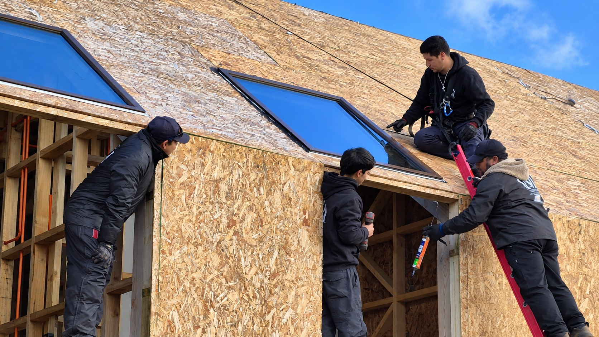
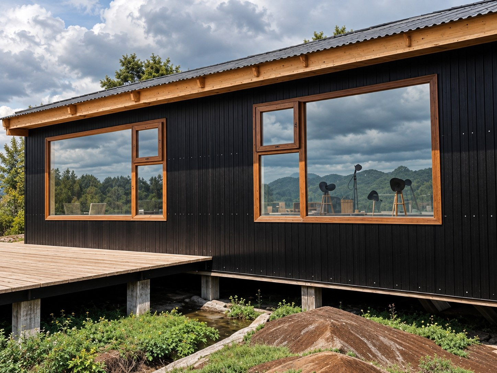
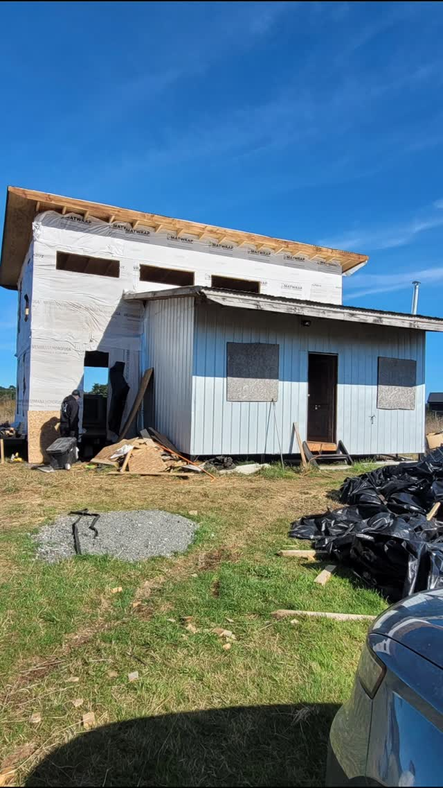

01
Ventanas de PVC
Diseñadas a medida, con opciones de apertura y terminación para obra nueva, ampliaciones y renovación.
- Formatos fijos y proyectantes
- Soluciones correderas
- Terminaciones personalizadas

FABRICACIÓN E INSTALACIÓN · FRUTILLAR
Fabricamos soluciones en PVC y termopanel a la medida de tu proyecto, con orientación cercana desde la elección hasta la instalación.
En Vidriería C&M transformamos medidas y necesidades reales en ventanas, puertas y soluciones de vidrio preparadas para hogares, oficinas y comercios.
Te orientamos para elegir el sistema, formato y terminación adecuados. Sin respuestas genéricas: cada abertura se estudia como parte de tu proyecto.
Cómo trabajamosFabricación e instalación coordinadas por un mismo equipo para cuidar el resultado de principio a fin.
Diseñadas a medida, con opciones de apertura y terminación para obra nueva, ampliaciones y renovación.
Puertas de PVC y paños vidriados que conectan ambientes, aprovechan la luz y acompañan la arquitectura.
Unidades de doble vidriado para mejorar el confort térmico y acústico en espacios residenciales y comerciales.
Trabajamos con líneas de PVC europea y americana. Nuestro equipo te ayuda a evaluar uso, tamaño, orientación, ventilación y estética antes de definir.
Recibir orientaciónAlternativas versátiles para soluciones con altas exigencias de hermeticidad, diseño y confort.
Una opción práctica para proyectos que necesitan deslizamiento fluido, funcionalidad y fácil mantención.
Indica ubicación, tipo de espacio y medidas aproximadas. Con eso podemos orientar el primer paso.
Revisamos apertura, perfil, termopanel, terminación y condiciones de instalación.
Preparamos cada unidad de acuerdo con las especificaciones confirmadas para tu obra.
El equipo realiza el montaje y comprueba funcionamiento, ajuste y terminaciones.
Obras y soluciones desarrolladas por el equipo en Frutillar y sectores de la Región de Los Lagos.


“Trae tus medidas. Nosotros te cotizamos y te orientamos.”
La forma de trabajar de Vidriería C&M
Completa los datos y abriremos WhatsApp con tu solicitud preparada. Puedes adjuntar fotos o planos directamente en la conversación.
Sí. Cada proyecto se cotiza según medidas, tipo de apertura, sistema y requerimientos del espacio.
Sí. Fabricamos e instalamos soluciones con termopanel para proyectos residenciales y comerciales.
Sí. Puedes enviar medidas aproximadas y fotos para recibir una primera orientación. La definición final se realiza con los datos confirmados.
La empresa realiza instalaciones dentro y fuera de la ciudad. Confirma disponibilidad para tu sector al solicitar la cotización.